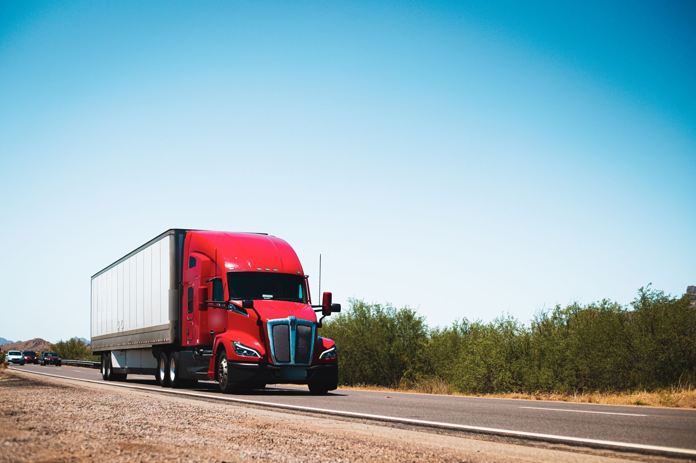
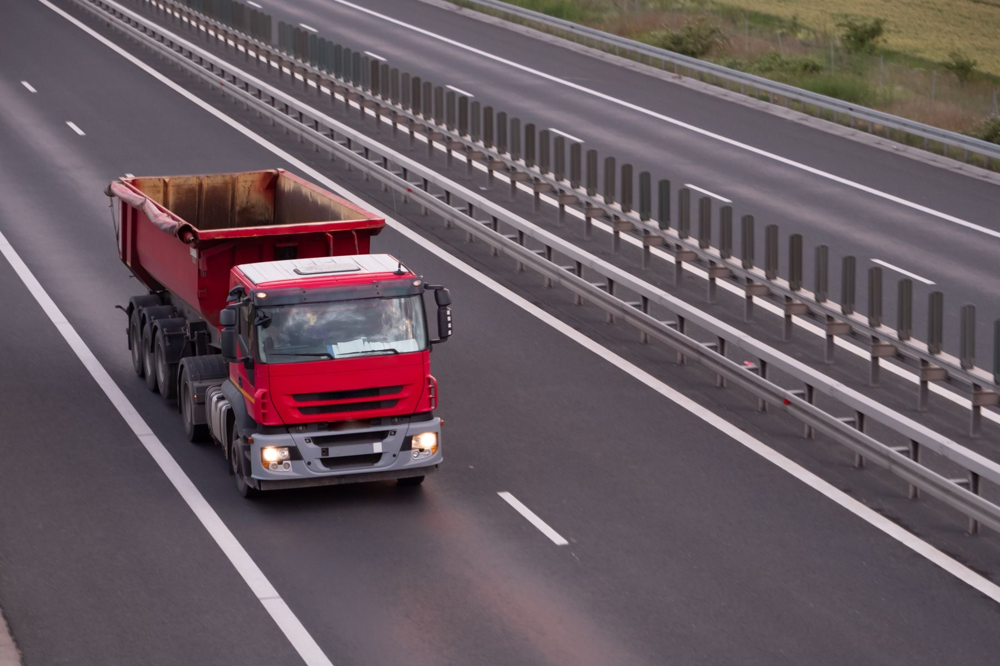
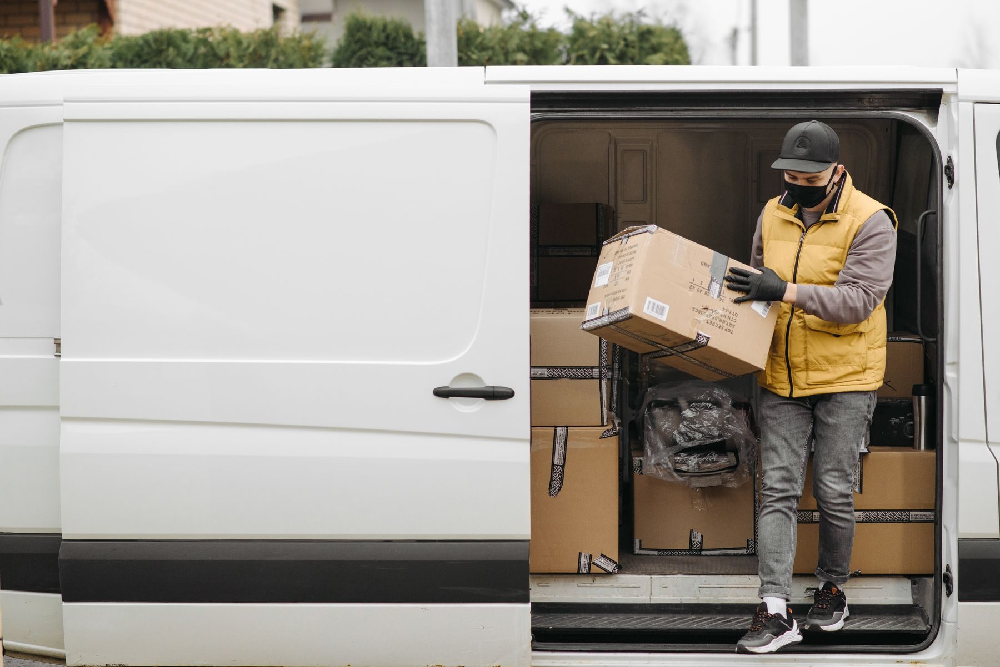

Freight across Victoria, delivered safely.
General freight, crane truck and tipper deliveries, and same-day vans from four depots across Melbourne, Geelong and the Central Highlands.
The right vehicle for the load
Sixty trucks, thirty vans and twenty account managers on the road, so we can move a pallet across town or a semi-load to the regions.

Linehaul
Prime movers running Melbourne to Geelong and Ballarat, overnight and on regular schedules.

Crane trucks and tippers
Building materials lifted onto site or tipped where you need them, with operators who hold the right licences.

Same-day vans
Express parcels and small loads between our depots and your door.
Every vehicle connected, every week reviewed
Driving is the riskiest thing our people do at work. Our Driving for Work Policy is backed by a Connected Fleet Safety Plan, so each rule is checked on the road rather than on paper.
- Trackers and cameras in every truck, van and car, with in-cab warnings for speed, phone use and tiredness.
- Driver keys, so every trip is recorded against the person driving.
- A weekly safety summary for our Fleet and WHS Manager and each depot manager, with video of what happened.
- Yard speed limits at every depot, with a beep when a vehicle goes over 20 km/h.
"We used to find out about a near miss weeks later, if at all. Now the depot managers sit down with the driver and the clip in the same week. It's a conversation, not a lecture."
Sarah Ellison, Fleet and WHS Manager (fictional)Four depots, one fleet
Each depot has a marked 10 km/h yard, a visitor car park, and a manager who reviews the week with their drivers.
Laverton North
Head office and linehaul
Dandenong South
South-east metro
Corio
Geelong and the Surf Coast
Wendouree
Ballarat and the Central Highlands
A worked example
ZV2X Logistics does not exist. Zetifi built it to show what a Connected Fleet Safety Plan looks like in a real-sized mixed fleet: a driving policy, the addendum that links each rule to the system, and the weekly summary that comes out of it. The numbers have the shape of real fleets but describe no real vehicle, driver or business.